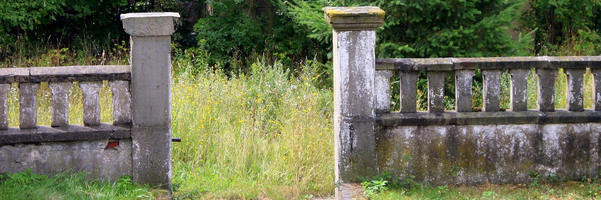

Promote the best of nature on your property and reduce the worst of it.

Tick and mosquito control is far more complex than simply mowing one's lawn. In fact, long grass alone does not provide good habitat for deer ticks (Lyme Disease host), and mosquitoes cannot breed in it(cite). To survive and reproduce, ticks need moist, sheltered environments and animal hosts (e.g. deer). Mosquitoes, for their part, require standing water to breed. Both ticks and mosquitoes tend to live out their lives fairly close to where they are born, and homeowners often unknowingly breed them in their own yards. NBHS experts look for existing mosquito, tick, and rodent habitat and develop intervention strategies with clients. We design our green infrastructure to optimize habitat for desirable biodiversity while making it less hospitable to pests. In addition to discouraging pest habitat, we can recommend effective, ecological, and economical pest control techniques (e.g. selective traps) and in some cases refer clients to licensed specialists for more aggressive interventions.
Metrics of Success:
• Baseline tick and mosquito counts can be established and monitored over time
• Clients will observe a reduction of disease-carrying pests on their property
• People will better understand disease-carrying pests rather than blaming nature altogether